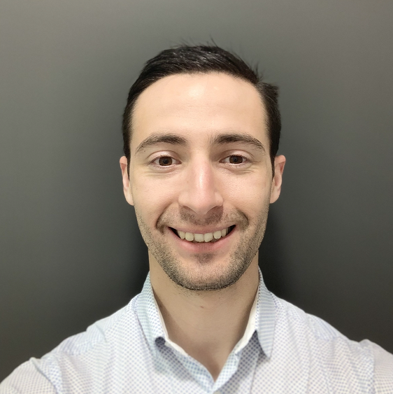

Thomas Hornsby
Systems Engineer

Profile
I am a multiskilled aircraft engineer with a diverse range of experience from Business Jets to Military aircraft.
My skills extend over a wide range of functions. Project management, Sales, Logistics, Engineering and Continuous Improvement.
I’m looking for a role that allows me to exercise my process improvement, leadership and technical knowledge.
My Aspirations are to sharpen my skills in a challenging environment whilst using my creative thinking to provide effective solutions.
Interests
I trained with the British Army, gaining extensive analytical and critical thinking skills as well as developing leadership, teamwork, fitness and discipline.
I enjoy learning, I’ve recently started my Master of Business Administration with a University in Valencia.
My recent focuses are front end software and Spanish. My free time is shared developing these skills and spending time outdoors in the mountains, on the road or in the sea.
Education
University: Universidad Europea - Valencia
Year: 2023 - 2024
Qualification: Master of Business Administration (MBA) - Pending
University: University of south wales
Qualification: BSc (Hons) Aircraft Engineering and Maintenance Systems Degree - First
Year: 2021 - 2023
College: Longridge Teaching Center
Year: 2013 - 2017
Qualification: BTEC Level 5 Aeronautical Engineering Higher National Diploma - Distinction
Qualification: EAL EXT Level 3 NVQ Diploma in Providing Engineering Support – Complete
Qualification: EAL Level 2 NVQ Diploma in Performing Engineering Operations – Complete
Work Experience
Electronic Warfare Systems Engineer - BAE Systems
Date: Oct 2021 - Present
Responsibilities:
- Managing internal and external suppliers, including site visits.
- Requirements management, including customer review meetings.
- Documentation preparation for design reviews.
- Supervising factory and site acceptance testing.
- Fault finding of rig components and systems.
- Installation and integration of equipment on various systems.
- Coordinating junior engineers and apprentices.
Capacity Planner - Bombardier
Date: Feb 2019 - Oct 2021
Responsibilities:
- Direct contact with internal and external customers, including financial departments and external vendors.
- Work closely with the Regional Sales Managers and the Ops team to provide the best sales/service to external customers.
- Regular phone contact and occasional face-to-face meets with customers to build and maintain good relationships.
- Manage site rotas for aircraft and support staff, to ensure up to date figures and hangar availability to support in sales communications with customers and planning on site.
- Chair daily meetings with Ops to present current figures and manage any changes.
- Assist the planning team with customers inputs to ensure a smooth transition.
Aircraft Mainentance Technician - Bombardier
Date: Sep 2018 - Feb 2019
Responsibilities:
- Performing mechanical and avionic maintenance on Learjet, Challenger and Global Bombardier aircraft.
- Modifications, Airworthiness Directives and Service Bulletins.
- Worked to timescales set by Project leads, assisted with defect investigation and rectification.
Aircrew Training Systems Engineer - BAE Systems
Date: Jul 2016 - Sep 2018
Responsibilities:
- Testing aircraft simulation software, checking functionality of the systems and observing visual performance to meet requirements.
- Provided support to military bases, maintaining devices and conducting on site testing.
- Seconded to BAE Systems Oman in May 2017 to help set up the new Typhoon training facility at Adam Airbase.
- Demonstrating project maturity to stake holders via milestones and project reviews.
- Presented devices on event stands to internal and external clients.
Technical Apprentice - BAE Systems
Date: Sep 2013 - Jul 2016
Responsibilities:
- Trained and developed various engineering skills and techniques.
- Worked in departments; Systems Integration, Typhoon Engineering Service Support, Electronic Assembly and Test, Electronic Design, Flight Test, Cost Scheduler & Integrator.
Skills
- Engineering – Engineering processes related to design, production and maintenance environments. Detailed Aircraft systems engineering, type specific for military and business jet aircraft.
- Continuous Improvement – 5s Engineering Lean Leading Academy training, experience implementing cost saving initiatives, efficiency monitoring, business case creation, bid work and tender creation.
- Soft skills – Microsoft Office suite of tools, document management, writing, data entry, requirement tracking, emails, web development, report preparation, PM, CRM and ERP software.
- Aviation – Understanding of military, private and commercial aviation operation. Through work and my journey to my Private Pilot’s License.
- Security – Airport security awareness trained and military experience with physical and procedural security.
- Safety – Creating risk assessments, Human factors, First aid trained, and general safety procedure related to the airfield, engineering workshops and offices.
- Regulation – Aviation is heavily regulated in operation, design, manufacture and maintenance. Reviewing legislation and guidance for changes in working practices.